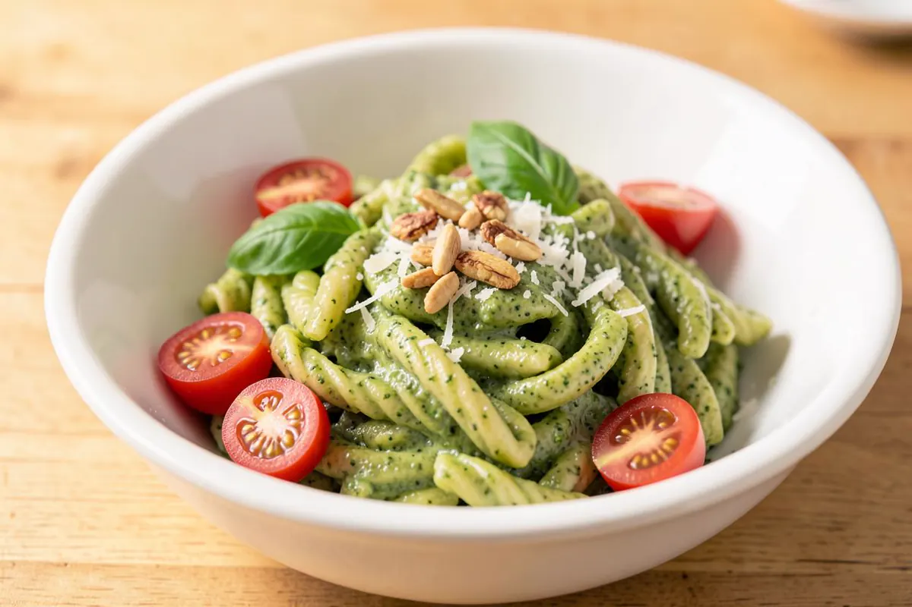

Creamy Pesto Cavatappi

Cavatappi, the corkscrew pasta, is the right shape for a creamy pesto sauce because every spiral holds a little pool of green. A spoonful of cream softens the pesto without drowning it, and halved cherry tomatoes add a fresh, sharp contrast.
It takes about twenty-five minutes and uses one pot and one pan. Four servings, with enough sauce to coat the pasta generously.
Ingredients
- 1 lb cavatappi pasta (corkscrew shape)
- 2 tbsp olive oil
- 1 cup high-quality basil pesto
- 1/2 cup heavy cream
- 1/2 cup grated Parmesan cheese
- 1 cup cherry tomatoes, halved
- 2 cloves garlic, minced
- Salt and pepper to taste
- Toasted pine nuts for garnish (optional)
Instructions
- Bring a large pot of salted water to a boil and cook the cavatappi pasta until it's perfectly al dente. Drain, reserving 1/2 cup of starchy pasta water.
- In a large skillet over medium-low heat, add the olive oil and sauté the minced garlic and halved cherry tomatoes for about 2 to 3 minutes until the tomatoes soften slightly.
- Turn the heat down to low. Pour in the heavy cream and basil pesto, stirring constantly until the two blend smoothly into a vibrant, creamy green sauce. Let it simmer gently for 2 minutes.
- Add the drained cavatappi and the grated Parmesan cheese into the skillet. Toss thoroughly until the ridged pasta corkscrews are completely coated with the pesto cream sauce.
- If the sauce seems too thick, stir in a splash of the reserved pasta water to loosen it up. Season with salt and pepper to taste.
- Serve hot, garnished with a few extra pinches of Parmesan cheese and toasted pine nuts if desired.
Why this recipe works
Pesto is intense, so a small amount of cream rounds out its saltiness and makes it cling to the pasta. Adding the pesto off the heat preserves its fresh basil flavour, which fades quickly when boiled. Reserved pasta water adjusts the consistency at the end.
Tips for success
- Cook the cavatappi until al dente and reserve at least half a cup of pasta water.
- Warm the cream gently, then stir in the pesto off the heat.
- Add the tomatoes at the end so they stay fresh and do not turn to sauce.
Substitutions that work
- Any short spiralled pasta works, including fusilli and rotini. Penne is a decent substitute.
- For a dairy-free version, skip the cream and use extra pasta water with the pesto.
- Add grilled chicken, shrimp or white beans to make it a more substantial meal.
Storage and make-ahead
Refrigerate for three days. Reheat gently with a splash of water, stirring over low heat. The pesto darkens in the fridge, which is normal. Do not freeze, as the cream separates.
Serving suggestions
Serve with extra parmesan, toasted pine nuts and a grind of black pepper. A crisp green salad is a good contrast.
Balancing the sauce
Pesto varies a great deal between brands and homemade batches, so treat the quantities as a starting point. Taste the sauce after the cream and pesto go in and adjust: a squeeze of lemon if it tastes flat, a pinch of salt if it tastes sweet, more parmesan if it needs depth. The sauce should coat the pasta lightly rather than pool in the bottom of the bowl, and reserved pasta water is the easiest way to loosen it without losing flavour. Add the cherry tomatoes at the very end and toss once, so they warm through but keep their shape.
Frequently asked questions
Can I use homemade pesto?
Yes, and it will be better. Use about a cup, and taste before adding extra salt since homemade pesto varies.
Why did my pesto sauce turn brown?
The pesto was heated too much or exposed to air. Stir it in off the heat and serve promptly.
Can I make this without cream?
Yes. Use a little pasta water to loosen the pesto, which gives a lighter but still glossy sauce.